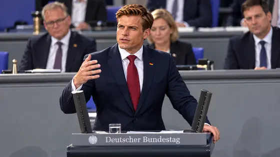

Gesetz
VSNOG erscheint am Samstag: Drucksache 3/15
Der Entwurf eines Gesetzes zur Neuordnung und parlamentarischen Kontrolle des Verfassungsschutzes erscheint am Samstag, 07. November 2026. Kernpunkte: Richtervorbehalt bei der Beobachtung von Parteien und Abgeordneten, keine öffentlichen Einstufungen ohne Gericht, Wahl der Amtsspitze durch den Bundestag und eine jährliche Leistungsbilanz. Zum VSNOG
